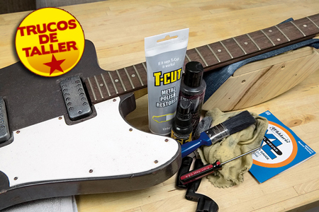
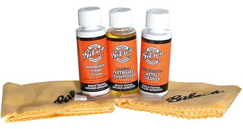

limpieza de la guitarra
Un instrumento musical como puede ser la guitarra, el bajo o el banjo, entre otros, además de hacernos pasar buenos ratos y hacernos disfrutar son muy delicados, no podemos dejarlos como si tal cosa, requieren unos cuidados muy básicos, muy simples y muy importantes. Cualquier descuido que tengamos puede variar la sonoridad del instrumento y la calidad del sonido.
{kind=link}
Es muy importante tener en cuenta el acabado de nuestra guitarra. Yo voy a hablar de guitarras, pero las técnicas y cuidados valen para el bajo, banjo, laud, sitar, mandolina,... en fin todos los instrumentos que tengan cuerdas y maderas. Retomo. Los acabados en las guitarras generalmente son de esmalte, laca o de uretano, estos cuidados pueden ser utilizados para el mantenimiento de todos ellos, pero también hay otros acabados menos usuales como los que son en base de aceite y hay que tener cuidado con los productos que se utilizan porque pueden corromperlos. Si no sabes de que es el acabado de tu guitarra o si será compatible el producto que has comprado con el, lo mejor es probarlo en un punto pequeño y 'oculto' de tu guitarra, para que si pasa lo peor, no se vea tanto. Esto lo puedes hacer con cinta adhesiva, para que no se extienda el producto.
Limpieza de la Caja:
La manera más simple es limpiar la guitarra con un trapo suave de algodón después de cada uso humedecido en agua y después secarlo. Esto evitará las impurezas que se puedan quedar en la caja. Estas impurezas pueden ser desde sudor hasta algún otro líquido. Esto le devolverá el brillo que tenía y lo mantendrá durante mucho tiempo.
Si esto no es suficiente, porque no hemos limpiado después de cada uso la caja, hay un producto utilizado por muchos para una limpieza básica, el aceite rojo. Este producto es muy común para el cuidado de todos los muebles de la casa porque contiene muy poca cantidad de cera o silicona.
La cera o la silicona no son tan nocivos para la madera como se puede pensar en principio, porque le aportan una fina capa protectora que protegen mejor de las impurezas que el agua. Eso sí, ni tanto ni tan calvo. Utilizar este producto con moderación, es un instrumento no una lata de sardinas, porque abusar de el puede ocasionar que se impregne el acabado y reblandecer la madera con las temperaturas más calidad con la consecuente dificultad en las futuras restauraciones.
Estamos hablando del cuidado exterior de la caja, pero en las cajas de las guitarras acústicas tiende a acumularse polvo, y el polvo atrae a la humedad que afecta al sonido. Aunque suene exagerado, una forma de quitar el polvo del interior es con una aspiradora, eso sí, ten cuidado de no arañar el resto de la caja.
Las Cuerdas
Las cuerdas deben estar limpias para tener una buena afinación y un buen sonido. La suciedad y la grasa de los dedos se acumulan en las cuerdas y produce corrosión. Para evitar esto, hay que limpiar las cuerdas después de tocar con una tela limpia sin pelusas, que pueda pasarse por debajo de las cuerdas. Es importante que la tela no suelte pelusas porque lo que conseguiríamos con eso es ensuciar las cuerdas.
Mantener las cuerdas limpias disminuye la sensibilidad al tocarlas y alarga su vida útil, pero debes tener en cuenta que los lubricantes para cuerdas impiden su corrosión y las mantiene en buen estado pero abusar de ellos ocasionan que el sonido se apague.
{kind=link}
El Diapasón
Si mantienes las cuerdas limpias evitas que la suciedad y la grasa se acumulen en el diapasón. Al cambiar las cuerdas debes limpiar el diapasón o mástil con una tela seca, si tu diapasón es de ébano o palorrosa puedes aplicar un poco de aceite de limón para eliminar las impurezas que puedan existir. Esto hace que la madera no se reseque tanto, con lo que lo tienes que dejar un tiempo. El tiempo varía en función de la suciedad o limpieza que tenga.
Una vez retirado el aceite hay que limpiar bien los trastes y la madera con estropajo muy fino en los que no son lacados porque si los haces te quedará un acabado mate.
La suciedad que se acumula en los bordes de los trastes se eliminan envolviendo una púa con una tela humedecida en aceite de limón.
{kind=link}
Apliques
Los apliques son las partes metálicas de la guitarra, como son las clavijas, el puente, el trémolo... y deben limpiarse también con regularidad. Para eso deben utilizarse productos especiales para los cromados y niquelados, si en tu caso están chapadas en oro debes utilizar una tela suave.
Normalmente es posible eliminar la corrosión en estas piezas quitándolas y limpiándola con productos especiales y asegurándote de que están perfectamente limpias antes de volverlas a colocar.
Es muy útil tener un pequeño pincel para limpiar las piezas del trémolo, puente o cualquier sitio donde sea difícil acceder a ellas para limpiarla.
Todas estas técnicas de limpieza, utilizadas con regularidad no solo aumenta la vida de tu instrumento, si no que, además, conserva su sonido, tacto y apariencia como el primer día.